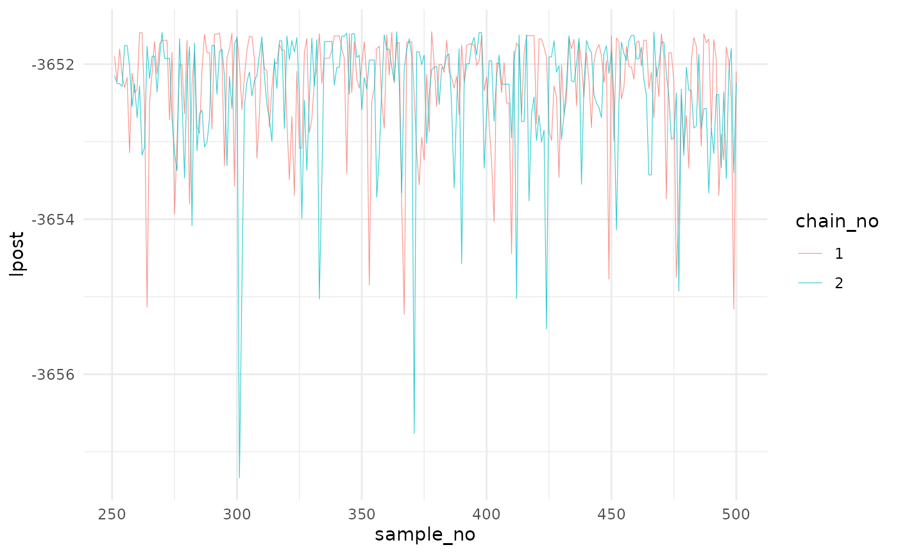
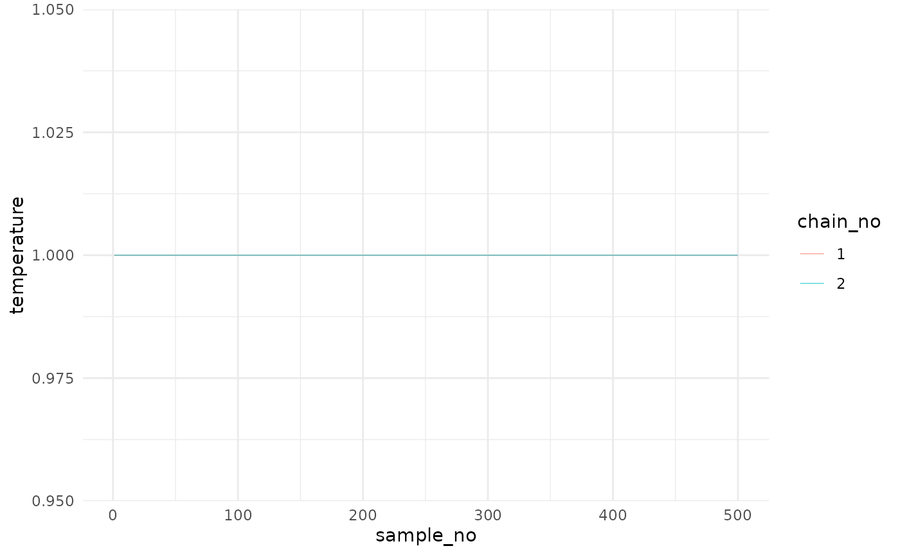

Continuous only model
David Hodgson
2026-01-14
Example1.Rmd
#devtools::install("..") #install if needed
library(ptmc)
library(dplyr)
library(tidyr)
library(coda)
# Using more than one core might fail on windows,
if (.Platform$OS.type == "windows") {
mc.cores <- 1
} else {
mc.cores <- 2 # use as many as available, preferably 4.
}Parallel Tempering Monte Carlo
Model
The example model is taken from Ben Lambert’s fantastic book, “A Student’s Guide to Bayesian Statistics,” Questions 13.3. Briefly, I assume the random count variable , the number of mosquitos caught during day , is Poisson, such that
where is a constant mortality hazard rate and is the daily recapture probability with prior distributions of and . The data , the number of mosquitos caught on day , are given in the RWM_mosquito.csv file but can also be found here.
Implementation
Create the model
The model list should be a list with three functions,
samplePriorDistributions,
evaluateLogLikelihood, and evaluateLogPrior
and a vector string with the parameter names used in the calibration,
namesOfParameters.
func samplePriorDistributions
A function which generates the initial values (usually by sampling the prior distributions)
- (no arguments)
- @return vector of values
func evaluateLogLikelihood
A function which generates the log-likelihood for a set of parameter values
- @param data, data needed to calculate the log-likelihood
- @param params, parameter values
- @return log-likelihood
func evaluateLogPrior
A function which calculates the log-prior for a set of parameter values
- @param params, parameter values
- @return log-prior
# model is a list of three functions and a vector string
model <- list(
lowerParSupport_fitted = c(0, 0),
upperParSupport_fitted = c(10, 1),
namesOfParameters = c("mu","psi"),
samplePriorDistributions = function(datalist) {
c(rgamma(1, 2, 20), rbeta(1, 2, 40))
},
evaluateLogPrior = function(params, datalist) {
if (params[1] < 0 || params[2] < 0 || params[1] > 1 || params[2] > 1)
return(-Inf)
lpr <- 0
lpr <- lpr + log(pgamma( params[1], 2,20))
lpr <- lpr + log(pbeta( params[2], 2,40))
lpr
},
evaluateLogLikelihood = function(params, covariance, datalist) {
y <- datalist$y
mu <- params[1]
psi <- params[2]
ll <- 0;
for (t in 1:length(datalist$y))
{
sum_x = 0
lambda = 1000*exp(-mu*(t+1))*psi;
for (i in 1:y[t]){
sum_x <- sum_x + i
}
ll <- ll - lambda + y[t]*log(lambda) - sum_x
}
ll
}
)Obtain the data
Data used in the log-likelihood function can be in any format.
dataMos <- read.csv("RWM_mosquito.csv")
# restructure the data for the log-likelihood function
data_t <- list(
time = dataMos$time,
y = dataMos$recaptured
)
data_t## $time
## [1] 1 2 3 4 5 6 7 8 9 10 11 12 13 14 15
##
## $y
## [1] 39 21 36 34 18 22 43 11 17 9 15 11 13 13 7Settings
The settings for the parallel tempering algorithm are summarised here.
Settings Options
- numberChainRuns, number of independent chains to run
- numberTempChains, number of dependent chains per chain run (i.e. the number of rungs in the temperature ladder)
- iterations, the number of steps to take in the Markov chain, (including the burn-in)
- burninPosterior, the number of steps in the burn-in (these are discarded)
- thin, thinning of the chain (i.e. =10 means only every 10th sample is saved)
- consoleUpdates, frequency at which the console updates (i. =100 means every 100th step)
- numberFittedPar, number of parameters
- onAdaptiveCov, whether to include adaptive covariance
- updatesAdaptiveCov, frequency at which the adaptive covariance matrix is updated
- burninAdaptiveCov, number of steps to take before using the adaptive covariance matrix
- onAdaptiveTemp, whether to include adaptive temperature ladder
- updatesAdaptiveTemp, frequency at which the adaptive temperature ladder is updated
- Debug, run with debug output
# settings used for the ptmc model
settings <- list(
numberChainRuns = 2,
numberTempChains = 10,
iterations = 10000,
burninPosterior = 5000,
thin = 10,
consoleUpdates = 100,
numberFittedPar = 2,
onAdaptiveCov = TRUE,
updatesAdaptiveCov = 200,
burninAdaptiveCov = 100,
onAdaptiveTemp = TRUE,
updatesAdaptiveTemp = 10,
onDebug = FALSE,
lowerParBounds = model$lowerParSupport_fitted,
upperParBounds = model$upperParSupport_fitted,
covarInitVal = 1e-8, # make very small if struggling to sample to beginning
covarInitValAdapt = 1e-4, # make very small if struggling to sample to beginning
covarMaxVal = 1, # decrease if struggling to sample in the middle
runParallel = TRUE,
numberCores = mc.cores
)Run the model.
post <- ptmc_func(model=model, data=data_t, settings=settings)Plot the data
ptmc_func returns a list of length two. The first entry
is post$mcmc a mcmc or mcmc.list object (from the coda
package). I can plot these and calculate convergence diagnostics using
coda functions:

# Plot the Gelman-Rubin diagnostic for the parameters
gelman.plot(post$mcmc)
gelman.diag(post$mcmc)The second entry is post$lpost and is long table
dataframe of the log-posterior values. These values can be easily
plotted using ggplot2:
library(ggplot2)
# Plot of the logposterior for the three chains
lpost_conv <- post$lpost %>% filter(sample_no>250)
logpostplot <- ggplot(lpost_conv, aes(x = sample_no, y = lpost)) +
geom_line(aes(color = chain_no), size = 0.2, alpha=0.8) +
theme_minimal()## Warning: Using `size` aesthetic for lines was deprecated in ggplot2 3.4.0.
## ℹ Please use `linewidth` instead.
## This warning is displayed once per session.
## Call `lifecycle::last_lifecycle_warnings()` to see where this warning was
## generated.
logpostplot
The third entry is post$temp and is long table dataframe
of the adaptive temperature values. These values can be easily plotted
using ggplot2:
tempplot <- ggplot(post$temp, aes(x = sample_no, y = temperature)) +
geom_line(aes(color = chain_no), size = 0.2, alpha=0.8) +
theme_minimal()
tempplot